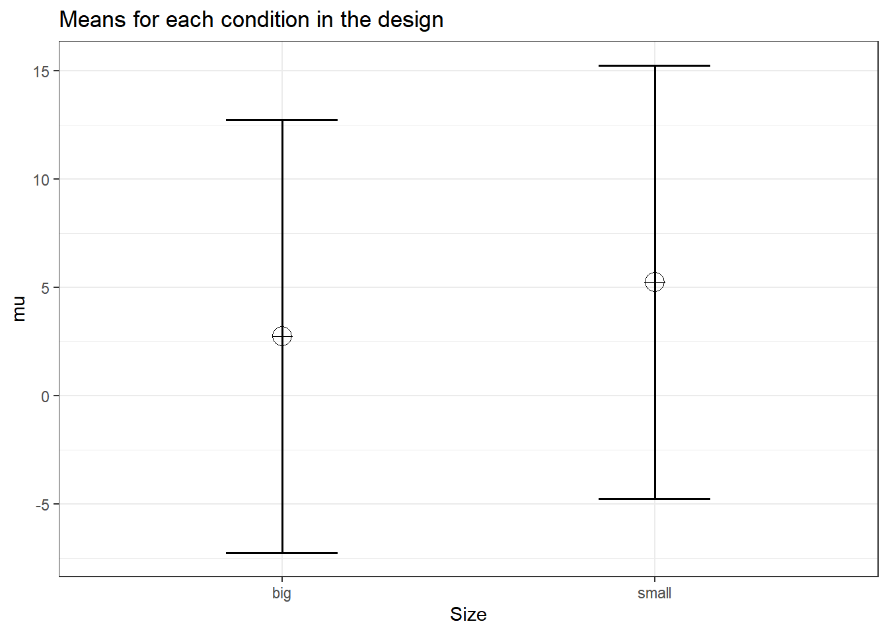
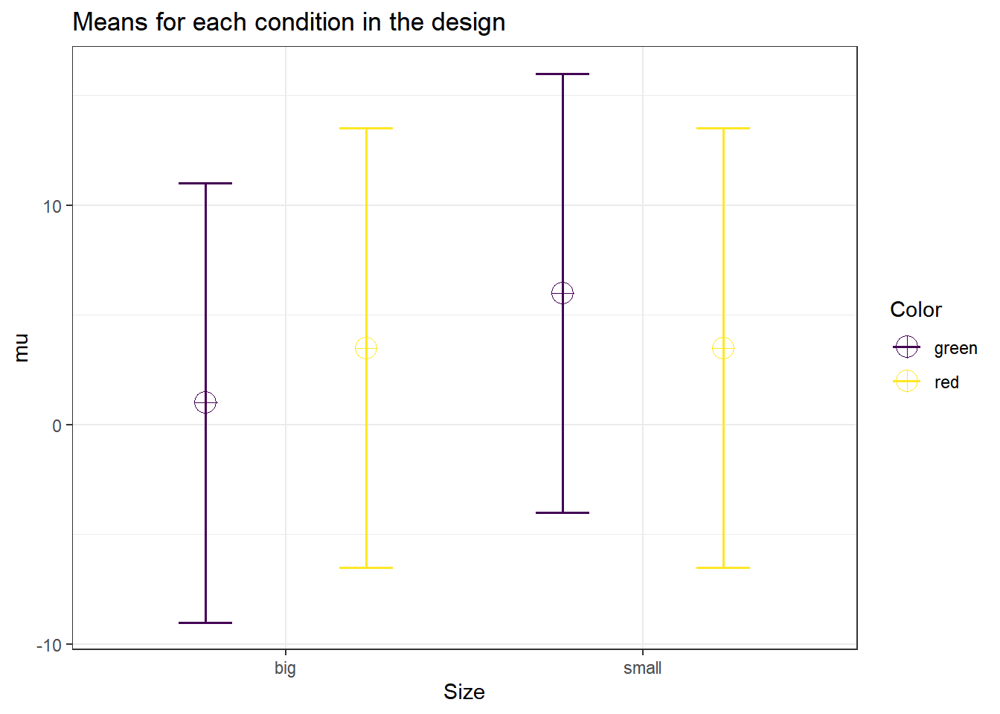
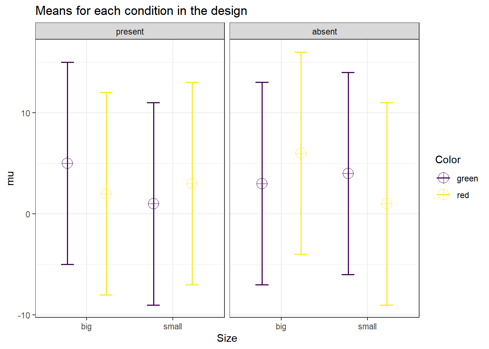
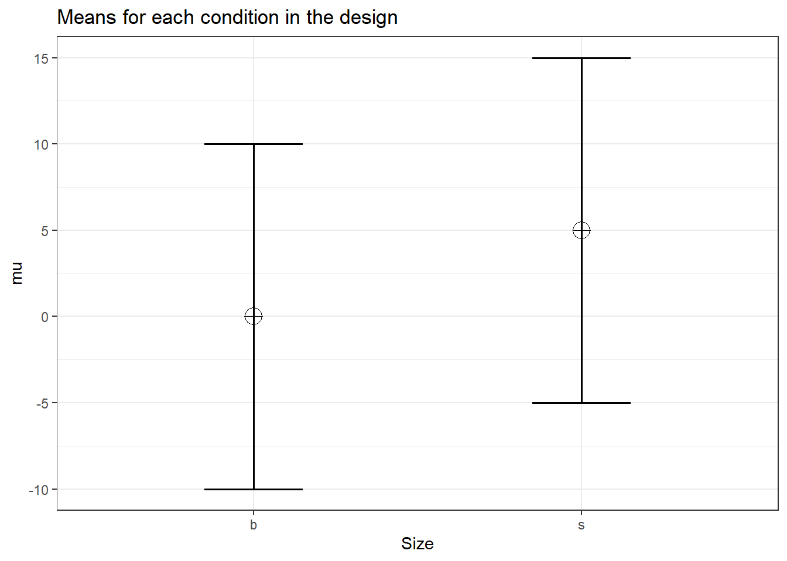
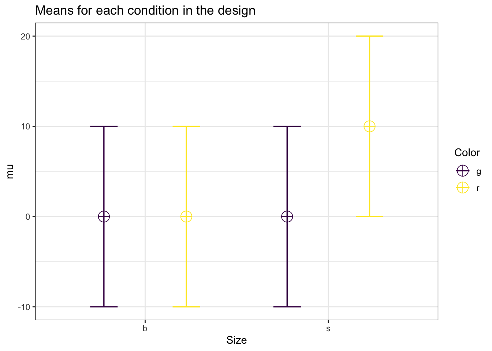

Chapter 6 Power for Three-way Interactions
There are almost no software solutions that allow researchers to perform power anaysis for more complex designs. Through simulation, it is relatively straightforward to examine the power for designs with multiple factors with many levels.
Let’s start with a 2x2x2 between-subjects design. We collect 50 participants in each between participant condition (so 400 participants in total - \(50(n)\times2(levels)\times2(levels)\times2(levels)= 400\)).
# With 2x2x2 designs,
# the names for paired comparisons can become very long.
# So here I abbreviate terms:
# Size, Color, and Cognitive Load, have values:
# b = big, s = small, g = green,
# r = red, pres = present, abs = absent.
labelnames <- c("Size", "b", "s", "Color", "g", "r",
"Load", "pres", "abs") #
design_result <- ANOVA_design(design = "2b*2b*2b",
#sample size per group
n = 50,
#pattern of means
mu = c(2, 2, 6, 1, 6, 6, 1, 8),
sd = 10, #standard deviation
labelnames = labelnames) 
simulation_result <- ANOVA_power(design_result,
alpha_level = alpha_level,
nsims = nsims,
verbose = FALSE)| power | effect_size | |
|---|---|---|
| anova_Size | 70.17 | 0.0179159 |
| anova_Color | 4.86 | 0.0025370 |
| anova_Load | 8.31 | 0.0032647 |
| anova_Size:Color | 31.89 | 0.0081783 |
| anova_Size:Load | 85.45 | 0.0248185 |
| anova_Color:Load | 7.80 | 0.0031794 |
| anova_Size:Color:Load | 85.60 | 0.0248853 |
exact_result <- ANOVA_exact(design_result,
alpha_level = alpha_level,
verbose = FALSE)| power | partial_eta_squared | cohen_f | non_centrality | |
|---|---|---|---|---|
| Size | 70.330132 | 0.0156937 | 0.1262691 | 6.25 |
| Color | 5.000000 | 0.0000000 | 0.0000000 | 0.00 |
| Load | 7.895322 | 0.0006373 | 0.0252538 | 0.25 |
| Size:Color | 32.172729 | 0.0057070 | 0.0757614 | 2.25 |
| Size:Load | 84.912313 | 0.0224439 | 0.1515229 | 9.00 |
| Color:Load | 7.895322 | 0.0006373 | 0.0252538 | 0.25 |
| Size:Color:Load | 84.912313 | 0.0224439 | 0.1515229 | 9.00 |
#Analytical power calculation
power_analytic <- power_threeway_between(design_result)
power_analytic$power_A## [1] 70.33333power_analytic$power_B## [1] 5power_analytic$power_C## [1] 7.895539power_analytic$power_AB## [1] 32.17471power_analytic$power_AC## [1] 84.91491power_analytic$power_BC## [1] 7.895539power_analytic$power_ABC## [1] 84.91491power_analytic$eta_p_2_A## [1] 0.01538462power_analytic$eta_p_2_B## [1] 0power_analytic$eta_p_2_C## [1] 0.0006246096power_analytic$eta_p_2_AB## [1] 0.005593536power_analytic$eta_p_2_AC## [1] 0.02200489power_analytic$eta_p_2_BC## [1] 0.0006246096power_analytic$eta_p_2_ABC## [1] 0.02200489We can also confirm the power analysis in g*power (Faul et al. 2007). g*power allows you to compute the power for a three-way interaction - if you know the Cohen’s f value to enter. Cohen’s f is calculated based on the means for the interaction, the sum of squares of the effect, and the sum of squares of the errors. This is quite a challenge by hand, but we can simulate the results, or use the analytical solution we programmed to get Cohen’s f for the pattern of means that we specified.
# The power for the AC interaction (Size x Load) is 0.873535.
power_analytic$power_AC## [1] 84.91491# We can enter the Cohen's f for this interaction.
power_analytic$Cohen_f_AC## [1] 0.15# We can double check the calculated lambda
power_analytic$lambda_AC## [1] 9# We can double check the critical F value
power_analytic$F_critical_AC## [1] 3.864929
A three-way ANOVA builds on the same principles as a one-way ANOVA. We look at whether the differences between groups are large, compared to the standard deviation. For the main effects we simply have 2 groups of 200 participants, and 2 means. If the population standard deviations are identical across groups, this is not in any way different from a one-way ANOVA. Indeed, we can show this by simulating a one-way ANOVA, where instead of 8 conditions, we have two conditions, and we average over the 4 groups of the other two factors. For example, for the main effect of size above can be computed analytically. There might be a small difference in the degrees of freedom of the two tests, or it is just random variation (And it will disappear when the number of iterations in the simulation, nsim, is increased).
string <- "2b"
n <- 200
mu <- c(mean(c(2, 2, 6, 1)), mean(c(6, 6, 1, 8)))
sd <- 10
labelnames <- c("Size", "big", "small")
design_result <- ANOVA_design(design = string,
n = n,
mu = mu,
sd = sd,
labelnames = labelnames)
simulation_result <- ANOVA_power(design_result,
alpha_level = alpha_level,
nsims = nsims,
verbose = FALSE)| power | effect_size | |
|---|---|---|
| anova_Size | 69.63 | 0.0177096 |
exact_result <- ANOVA_exact(design_result,
alpha_level = alpha_level,
verbose = FALSE)| power | partial_eta_squared | cohen_f | non_centrality | |
|---|---|---|---|---|
| Size | 70.33333 | 0.0154607 | 0.1253137 | 6.25 |
# Power based on analytical solution
power_oneway_between(design_result)$power ## [1] 70.33333Similarly, we can create a 2 factor design where we average over the third factor, and recreate the power analysis for the Two-Way interaction. For example, we can group over the Cognitive Load condition, and look at the Size by Color Interaction:
string <- "2b*2b"
n <- 100
mu <- c(mean(c(1, 1)), mean(c(6, 1)), mean(c(6, 6)), mean(c(1, 6)))
sd <- 10
labelnames <- c("Size", "big", "small", "Color", "green", "red")
design_result <- ANOVA_design(design = string,
n = n,
mu = mu,
sd = sd,
labelnames = labelnames)
simulation_result <- ANOVA_power(design_result,
alpha_level = alpha_level,
nsims = nsims,
verbose = FALSE)| power | effect_size | |
|---|---|---|
| anova_Size | 70.41 | 0.0179067 |
| anova_Color | 5.10 | 0.0025282 |
| anova_Size:Color | 70.80 | 0.0179360 |
exact_result <- ANOVA_exact(design_result,
alpha_level = alpha_level,
verbose = FALSE)| power | partial_eta_squared | cohen_f | non_centrality | |
|---|---|---|---|---|
| Size | 70.33227 | 0.0155376 | 0.1256297 | 6.25 |
| Color | 5.00000 | 0.0000000 | 0.0000000 | 0.00 |
| Size:Color | 70.33227 | 0.0155376 | 0.1256297 | 6.25 |
# Power based on analytical solution
power_res <- power_twoway_between(design_result)
power_res$power_A## [1] 70.33228power_res$power_B## [1] 5power_res$power_AB## [1] 70.33228string <- "2b*2b*2b"
n <- 50
mu <- c(5, 3, 2, 6, 1, 4, 3, 1)
sd <- 10
r <- 0.0
labelnames <- c("Size", "big", "small",
"Color", "green", "red",
"CognitiveLoad", "present", "absent")
design_result <- ANOVA_design(design = string,
n = n,
mu = mu,
sd = sd,
labelnames = labelnames)
simulation_result <- ANOVA_power(design_result,
alpha_level = alpha_level,
nsims = nsims,
verbose = FALSE)| power | effect_size | |
|---|---|---|
| anova_Size | 41.15 | 0.0101529 |
| anova_Color | 5.97 | 0.0027337 |
| anova_CognitiveLoad | 11.55 | 0.0039201 |
| anova_Size:Color | 5.67 | 0.0027030 |
| anova_Size:CognitiveLoad | 5.45 | 0.0026596 |
| anova_Color:CognitiveLoad | 5.54 | 0.0027225 |
| anova_Size:Color:CognitiveLoad | 78.61 | 0.0214761 |
exact_result <- ANOVA_exact(design_result,
alpha_level = alpha_level,
verbose = FALSE)| power | partial_eta_squared | cohen_f | non_centrality | |
|---|---|---|---|---|
| Size | 41.52809 | 0.0077519 | 0.0883883 | 3.0625 |
| Color | 5.71548 | 0.0001594 | 0.0126269 | 0.0625 |
| CognitiveLoad | 11.61777 | 0.0014329 | 0.0378807 | 0.5625 |
| Size:Color | 5.71548 | 0.0001594 | 0.0126269 | 0.0625 |
| Size:CognitiveLoad | 5.71548 | 0.0001594 | 0.0126269 | 0.0625 |
| Color:CognitiveLoad | 5.71548 | 0.0001594 | 0.0126269 | 0.0625 |
| Size:Color:CognitiveLoad | 78.32737 | 0.0189270 | 0.1388960 | 7.5625 |
#Analytical power calculation
power_analytic <- power_threeway_between(design_result)
power_analytic$power_A## [1] 41.5306power_analytic$power_B## [1] 5.715533power_analytic$power_C## [1] 11.61827power_analytic$power_AB## [1] 5.715533power_analytic$power_AC## [1] 5.715533power_analytic$power_BC## [1] 5.715533power_analytic$power_ABC## [1] 78.33036power_analytic$eta_p_2_A## [1] 0.007598077power_analytic$eta_p_2_B## [1] 0.0001562256power_analytic$eta_p_2_C## [1] 0.001404275power_analytic$eta_p_2_AB## [1] 0.0001562256power_analytic$eta_p_2_AC## [1] 0.0001562256power_analytic$eta_p_2_BC## [1] 0.0001562256power_analytic$eta_p_2_ABC## [1] 0.01855544The power for interactions depends on Cohen’s f, the alpha level, the sample size, and the degrees of freedom.
# With 2x2x2 designs,
# the names for paired comparisons can become very long.
# So here the sample size abbreviate terms
# Size, Color, and Cognitive Load, have values:
# b = big, s = small, g = green,
# r = red, pres = present, abs = absent.
labelnames <- c("Size", "b", "s", "x", "Color", "g", "r",
"Load", "pres", "abs") #
design_result <- ANOVA_design(design = "3b*2b*2b",
n = 15,
mu = c(20, 0, 0, 0, 0,
0, 0, 0, 0, 0, 0, 20),
sd = 20,
labelnames = labelnames) # Power based on exact simulations
exact_result <- ANOVA_exact(design_result,
verbose = FALSE)| power | partial_eta_squared | cohen_f | non_centrality | |
|---|---|---|---|---|
| Size | 26.92604 | 0.0146628 | 0.1219875 | 2.5 |
| Color | 5.00000 | 0.0000000 | 0.0000000 | 0.0 |
| Load | 5.00000 | 0.0000000 | 0.0000000 | 0.0 |
| Size:Color | 67.93217 | 0.0427350 | 0.2112886 | 7.5 |
| Size:Load | 67.93217 | 0.0427350 | 0.2112886 | 7.5 |
| Color:Load | 60.38579 | 0.0289017 | 0.1725164 | 5.0 |
| Size:Color:Load | 26.92604 | 0.0146628 | 0.1219875 | 2.5 |
#Analytical power calculation
power_analytic <- power_threeway_between(design_result)
power_analytic$power_A## [1] 5power_analytic$power_B## [1] 5power_analytic$power_C## [1] 48.6496power_analytic$power_AB## [1] 34.7961power_analytic$power_AC## [1] 67.97466power_analytic$power_BC## [1] 91.55713power_analytic$power_ABC## [1] NaNpower_analytic$eta_p_2_A## [1] 0power_analytic$Cohen_f_A## [1] 0We see that a pattern of means of 0, 0, 0, 0, 0, 0, 0, 20 for a 2x2x2 interaction equals a Cohen’s f of 0.25.
labelnames <- c("Size", "b", "s", "Color", "g", "r")
design_result <- ANOVA_design(design = "2b*2b",
n = 10,
mu = c(0, 0, 0, 10),
sd = 10,
labelnames = labelnames) 
# Power based on exact simulations
exact_result <- ANOVA_exact(design_result,
verbose = FALSE)| power | partial_eta_squared | cohen_f | non_centrality | |
|---|---|---|---|---|
| Size | 33.71329 | 0.0649351 | 0.2635231 | 2.5 |
| Color | 33.71329 | 0.0649351 | 0.2635231 | 2.5 |
| Size:Color | 33.71329 | 0.0649351 | 0.2635231 | 2.5 |
#Analytical power calculation
power_analytic <- power_twoway_between(design_result)
power_analytic$power_A## [1] 33.71329power_analytic$eta_p_2_A## [1] 0.05882353power_analytic$Cohen_f_A## [1] 0.25Cohen’s f is twice as large for a 2x2 design with the same mean value in one of four cells. In a 2 factor between design.
labelnames <- c("Size", "b", "s")
design_result <- ANOVA_design(design = "2b",
n = 10,
mu = c(0, 5),
sd = 10,
labelnames = labelnames) 
# Power based on exact simulations
exact_result <- ANOVA_exact(design_result,
verbose = FALSE)| power | partial_eta_squared | cohen_f | non_centrality | |
|---|---|---|---|---|
| Size | 18.50957 | 0.0649351 | 0.2635231 | 1.25 |
#Analytical power calculation
power_analytic <- power_oneway_between(design_result)
power_analytic$power## [1] 18.50957power_analytic$eta_p_2## [1] 0.05882353power_analytic$Cohen_f## [1] 0.25